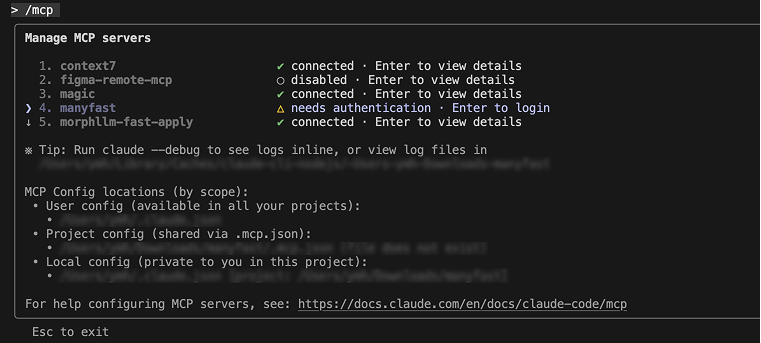

매니패스트 기획을 Cursor·Claude Code가 직접 읽어가게 하는 MCP 연동, 2분이면 끝나요.
마지막 한 단계
재훈님,
이제 개발까지 잇는 단계 하나
남았어요.
매니패스트를 만든 허재혁입니다. 재훈님이 PRD부터 와이어프레임, 기능명세서까지 이미 정리하셨더라고요. 정말 반가웠어요. 그런데
MCP 연동만 아직 안 하셨더라고요.
매니패스트가 진짜 힘을 발휘하는 순간은 여기부터예요. 기획한 문서를
Cursor나 Claude Code가 직접 읽어가서
, 그 기획대로 코드가 만들어졌는지 스스로 대조해줍니다. 2분이면 세팅이 끝나요.
MCP 연동 링크 하나면
개발까지 이어져요.
매니패스트 설정에서 MCP 연동 링크를 복사해서 Cursor나 Claude Code에 붙여넣으면 끝이에요. 이제 개발자 옆에서
"매니패스트에서 이 프로젝트 기획 문서 읽어줘"
라고만 말하면 됩니다.

연동하시면 이렇게 달라져요
Claude Code가 PRD, 와이어프레임, 기능명세서 전체를 직접 읽어가요.
코드가
기획서대로 실제 구현됐는지 AI가 스스로 대조
해줍니다.
"이 부분은 기획서에 있는데 코드엔 빠져 있네요"
처럼 짚어줘요.
MCP 연동 세팅하기
연동 예시가 궁금하시면
이 블로그 글
에 자세히 정리해뒀어요.
여기까지 오셨다면, 진짜 끝까지 이어보세요.
허재혁
매니패스트 창업자
대시보드
사용 가이드
블로그
포럼
Manyfast Inc.
수신 거부